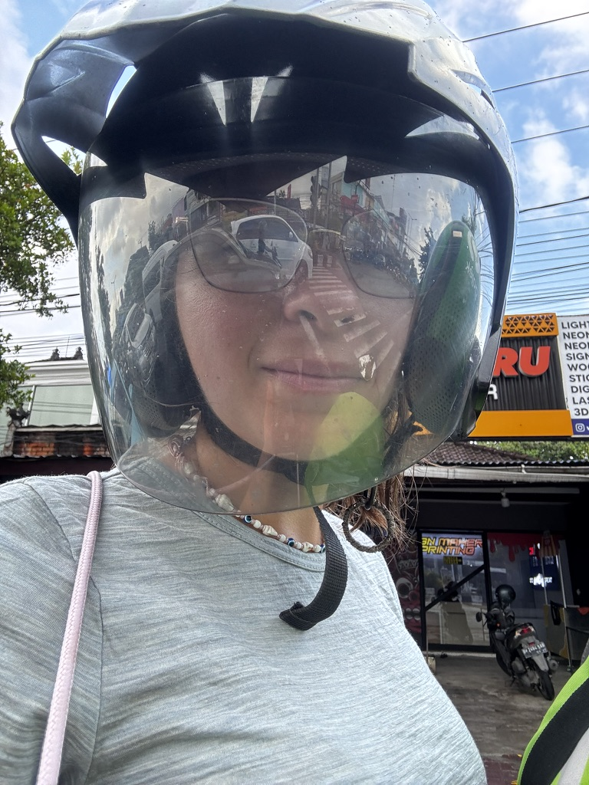
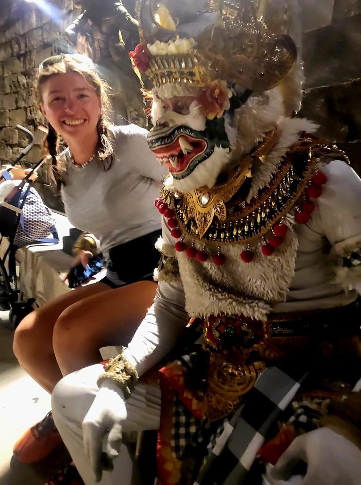
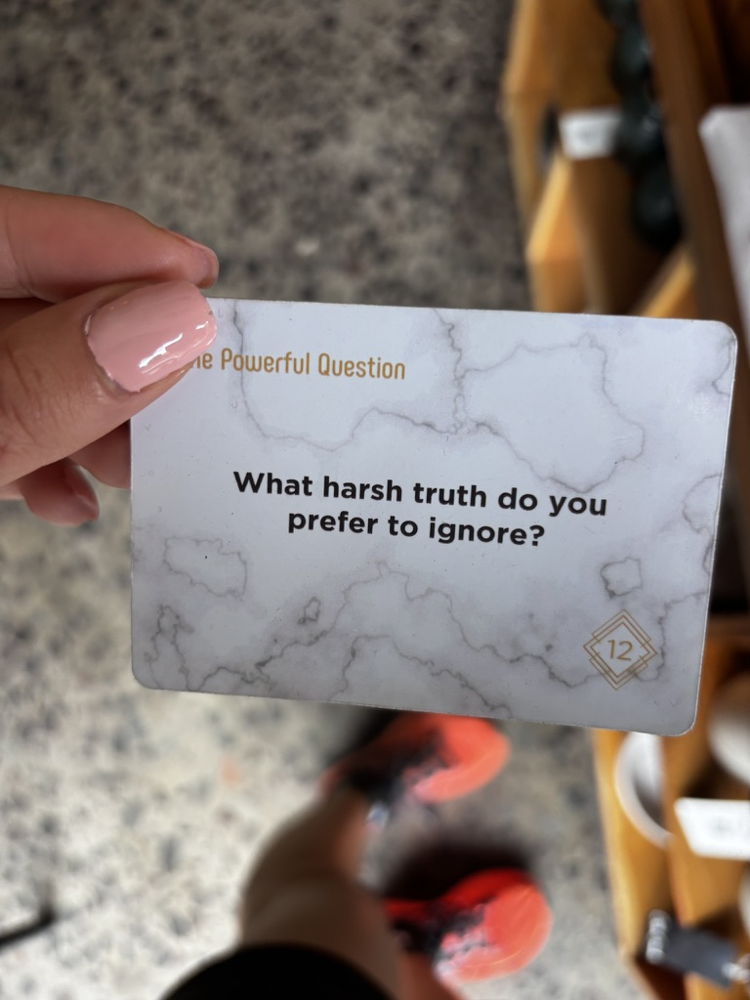
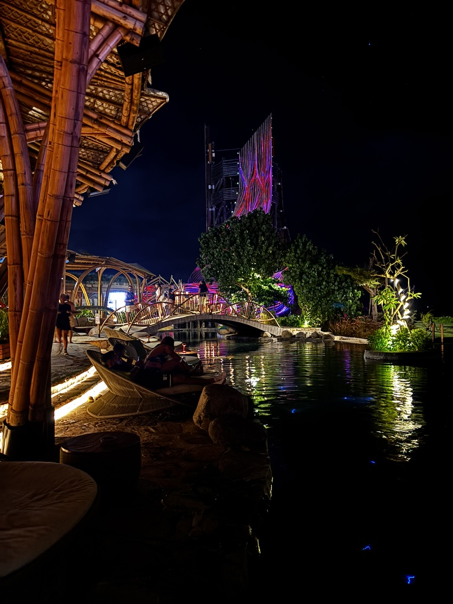
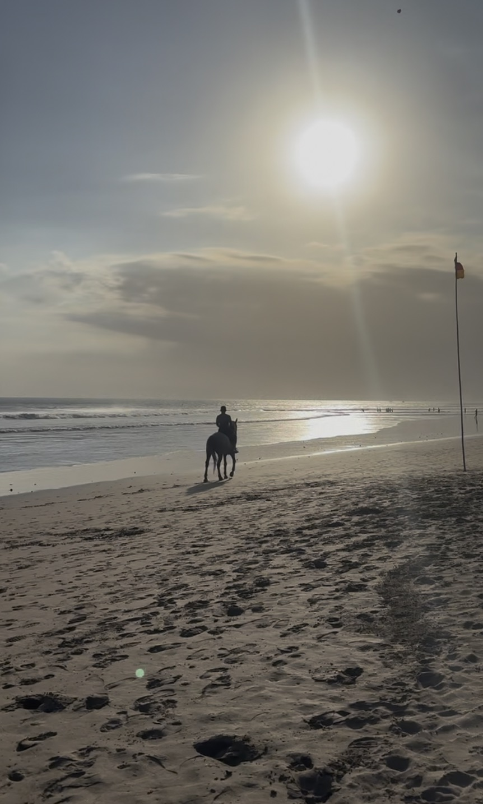
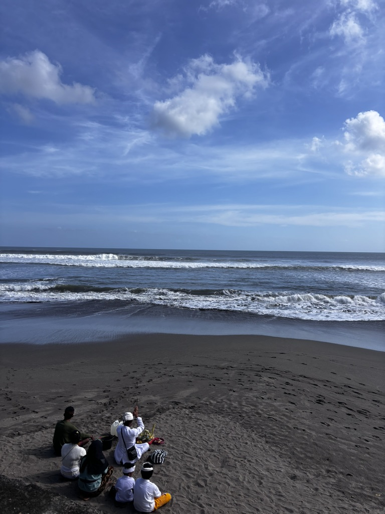

I landed in Bali and immediately had no idea where I was. Not geographically — I knew where I was geographically. I mean in the deeper sense: what kind of place is this, what are the rules, how does it work, what am I supposed to do with my face when a man on a motorbike offers me ten things at once and I'm not sure I want any of them.

Arrived. Knocked out. Where am I. The answer is Bali, but Bali takes a moment to process.
Bali hits you. Not aggressively — it's not threatening. But it's loud and warm and colourful and full of things happening simultaneously, and if you've come from somewhere quieter or colder or more orderly, it takes a beat to recalibrate. I stood outside the airport and recalibrated for a while.
The offerings
The first morning, I nearly stepped on one. A small square of woven palm leaf, filled with flowers, rice, incense — placed directly on the pavement in front of a door. Then I noticed there was another one. And another. They were everywhere: on steps, on motorbikes, on shop counters, on the ground at the base of trees.

Every morning, placed exactly here. A gift for the gods. This happens across the whole island, every single day.
Canang sari — the Balinese daily offering. Made fresh each morning, placed with intention, and left. By afternoon they're crushed underfoot or scattered by the wind, but that's not the point. The point is the act of making them and placing them. The daily reminder that there is something larger than your to-do list.
I started watching where I stepped. I also started waking up earlier just to see the island at the hour when the offerings were being placed. It's a good hour. The streets smell of incense and the light is still low and everything feels slightly more serious than it will be in an hour when the motorbikes start.
The first god
Bali is full of gods. Statues, shrines, temples — the divine is everywhere and presented without apology. On one of my first days, I found one that stopped me. I don't know which deity it was. But it had an expression that I can only describe as knowing.

My first god. He looked at me like he knew exactly how the next few weeks were going to go. "Stay ready," he seemed to say. He was right.
I stood there looking at it for longer than made sense. There was something in the expression — amusement, maybe, or patience — that made me feel like I was being gently warned. Things were going to get funny. Things were going to get complicated and strange and wonderful and occasionally absurd. I should stay ready.
I was not ready. But I appreciated the heads up.
Heaven, found
You find it eventually in Bali — the place that makes you understand why people keep coming back. For everyone it's different. For me it happened on a random afternoon, on a path I hadn't planned to walk, when I turned a corner and the light was exactly right.

Heaven. Found. The best place ever. I'm not going to tell you exactly where because some things are better discovered than directed.
It lasted about forty minutes — that feeling of having found exactly the right place at exactly the right time. Then a group arrived and the feeling changed into something different but still good. That's Bali. Nothing stays perfectly quiet for long. But the forty minutes were real and I still have them.
Canggu
Everyone has opinions about Canggu. It's too touristy, it's too Instagram, it's not the real Bali — I heard all of this before I went and I understood it when I got there, and I also thought: yes, but look at this café.

Canggu. Chaotic, yes. Also: cafés that might change your life. Both things are true.
Canggu is loud and congested and full of people who came to Bali and decided not to leave, which gives it an energy that is either exhausting or invigorating depending on which day you catch it. The cafés are genuinely extraordinary. I sat in three in one afternoon and had ideas in all of them. Whether those ideas were good, I'm still not sure. But something was happening in that neighbourhood that made your brain run faster. I'll take it.
The unexpected beach club
I didn't plan Luna Beach Club. I walked past it, heard the music, saw the light on the water, and went in. It was the kind of place that shouldn't work — too designed, too deliberate — and yet it absolutely worked, at least that evening, at least at that hour.

Luna Beach Club. Didn't plan this. Best decision of that particular Tuesday.
The best places I've found travelling have almost always been unplanned. Not because planning is bad — it's useful — but because the planned things are the things you've already imagined, and the unplanned things are the things that surprise you. Surprise is underrated.
The horse. The price.
There is a horse riding situation on certain beaches in Bali. You see the horse. The horse sees you. Someone nearby tells you a price. The price is not what you expected. You process the price. You weigh the horse against the price. You make a decision.

The price. The horse. The internal debate. I will not tell you which way I went. Use your imagination.
What I will say is that Bali does this frequently — presents you with something you didn't know you wanted and a price that makes you stop and think about what you actually value. It's good practice for life. The island is full of these small decisions. They add up.
The ceremony
Near the end of my first stretch in Bali, I came across a family gathering. A ceremony — one of the many the Balinese hold, for births and deaths and harvests and transitions and gratitude and probably several other occasions I don't have the cultural vocabulary to name.

A family gathering to say thank you to the universe. I watched from a distance. It felt like the right way to end the first chapter.
I watched from a respectful distance. The white cloth, the flowers, the incense, the collective stillness of it — a whole family pausing together to say thank you. For what exactly I didn't know. For everything, probably. For the specific combination of circumstances that had brought them all to this place at this moment.
I thought about the god from the first day. The expression that said: things will get funny. Stay ready.
They had gotten funny. They had also gotten moving and strange and warm and occasionally overwhelming. That's Bali. You get your feet wet and the current is stronger than you expected, and then you stop fighting it and see where it takes you.
I was not done. This was just the beginning.